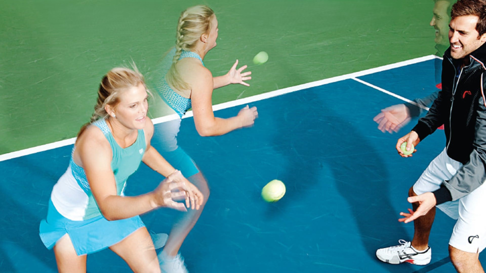
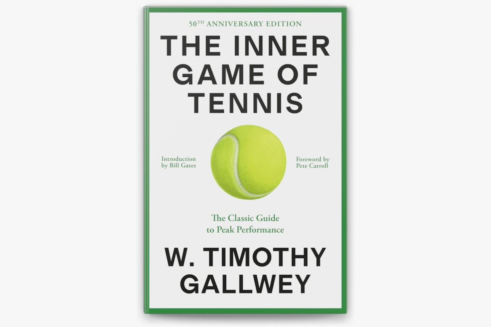

Aerobic Endurance
This helps players endure high-intensity rallies and long matches.
The heart and lungs must work in harmony to deliver oxygen to
muscles, enabling them to generate energy efficiently. During
aerobic exercise, muscles produce energy through the oxidation
of glucose and fats.
Anaerobic Endurance
Anaerobic endurance provides explosive power, especially in the
legs and upper body. Players need to generate quick bursts of speed
and strength to chase the ball or hit a powerful shot. This relies
on fast-twitch muscle fibers. Anaerobic activities draw on glycogen
stores, which are rapidly broken down to produce energy without
using oxygen.
Flexibility
Tennis involves a wide range of movements—running, jumping, turning,
and hitting—that place significant strain on muscles, bones, and joints.
Working on flexibility and elasticity is crucial to reducing injury risks.
Every training session starts and ends with a 10–15 minute warm-up and
stretching routine, as well as yoga, massage, and spa treatments.
Strength and Speed
Like any other athletes, tennis players train for strength and speed,
but with a focus on explosive speed—quick repetitions using their body
weight or moderate weights rather than slow repetitions with heavy loads.
This training targets:
-
The muscles of the legs
(quadriceps, calves, hamstrings, and glutes), which provide speed
and reliable movement on the court.
-
Arms and shoulders (trapezius, deltoids, biceps,
triceps, forearms, and elbow muscles), ensuring precise and powerful shots.
-
The core (abs, back, and obliques), which maintains
balance during play.
However, being overly muscular in tennis is impractical because such muscles
won't be able to respond to an opponent's shot in a fraction of a second.
Reaction and Coordination
On the court, players must instantly process information about the ball
and adjust their body position accordingly for the next shot. Working on reaction
time and coordination is crucial in tennis. Recently, various devices and balance
exercises have been used to enhance these skills. Interestingly, it's precisely
because racket sports require such developed reaction times that players tend
to live longer than most people.

Nutrition
It’s impossible to be a professional athlete without proper nutrition.
Like most athletes, tennis players typically follow a balanced diet that includes:
- A large amount of fruits and vegetables to obtain essential vitamins and minerals.
- Adequate protein for muscle recovery and growth.
- Complex carbohydrates such as whole grains and starchy vegetables to provide
long-lasting energy.
- Healthy fats, like omega-3s, which support heart and brain health.
- Water and sports drinks to prevent dehydration and maintain optimal hydration levels.
Hydration and energy are particularly crucial during a match, as tennis players
burn between 500 and 5000 calories on average per game, depending on their height,
weight, gender, as well as the intensity and duration of the match.
However, individual diets may vary based on personal needs and preferences.
For example, Novak Djokovic has long excluded gluten and meat from his diet and
often drinks grape juice during breaks for a quick energy boost. Others may turn
to cola for the same purpose. Interestingly, for a long time, vending machines for
Coca-Cola were placed near the umpire's chair on the main courts of major tournaments,
including the iconic Centre Court at Wimbledon.
Psychology
Tennis is a one-on-one game, but your opponent isn’t always on the other
side of the court. Often, the biggest opponent in tennis is yourself.
This is why the game demands extraordinary emotional and psychological
resilience from its players.
For this reason, psychologists are increasingly becoming part of players’ teams.
At the WTA and ATP Tour levels, topics like mental stability under the influence
of social media and the press are being actively discussed. Streaming services
are even producing documentaries to showcase the challenging lives of tennis players
through the lens of tennis psychology.
One particularly insightful book on this subject is The Inner Game of Tennis
by Timothy Gallwey. Following its main premise: when you step onto the court,
you bring two versions of yourself—the "First Self" and the "Second Self."
The "First Self" is responsible for external perceptions—how you look, what the
attractive person in the front row thinks of you, the desire to play beautifully, and so on.
The "Second Self" focuses on your internal state. When guided by the "Second Self,"
your body plays for you, and your mind focuses only on where to place the ball.
On the court, it’s just you and the ball. The "Second Self" lives in the present
moment—here and now.
As you might have guessed, successful tennis relies on playing under the guidance
of the "Second Self."

Common Tennis Injuries
Tennis Elbow (Lateral Epicondylitis)
Chronic injury of forearm tendons caused by repetitive, strong,
and sharp loads during strokes. Tendons stretch, overstrain, and sustain
damage at attachment points to bones. Symptoms include pain that worsens
with any elbow movement.
Rotator Cuff Injury
This injury involves damage to ligamentous apparatus stabilizing shoulder joint.
Symptoms include sharp shoulder pain after hitting the ball.
Impingement Syndrome
It develops if a tennis player continues to play with a damaged rotator cuff.
This leads to a strain or tear of the supraspinatus tendon. Additionally,
reactive inflammation can cause bursitis in the shoulder joint.
A key symptom is pain when lifting the arm overhead.
Carpal Tunnel Syndrome
This occurs due to wrist injuries, falls, or overloading during strokes.
Small ligaments around median nerve become inflamed, compressing nerve and
disrupting its function. Symptoms include weakened grip, reduced strength in
first three fingers, tingling, wrist pain, numbness, and loss of sensation in hand.
Ankle Sprains or Tears
These injuries often result from sharp changes in movement direction, excessive shoe
traction, uneven court surfaces, or stepping on uneven surface. Symptoms include sharp
pain, snapping sound in ankle, and swelling or redness in injured area. Severe ligament
tears can lead to fractures.
Stress Fractures of Foot and Metatarsal Bones
These occur due to strong horizontal forces on foot, such as jumps, lunges,
or uneven courts. Symptoms include pain in foot after awkward movement, swelling,
and sometimes hematoma on top of foot. Symptoms may be less pronounced when
it is a bone crack rather than a fracture. Stress fractures are more common in children
and adolescents.
Knee Joint Injuries
Knees are heavily strained during tennis, and injuries can affect patellar ligaments,
menisci, or cruciate ligaments. Symptoms vary from tenderness in kneecap to joint
locking up due to meniscus impingement. Cruciate ligament tears are accompanied by
severe pain. Causes include sudden trajectory changes and uneven courts.
Calf Muscle Injuries (Tennis Leg)
A fairly common tennis injury, which is why it is referred to as "tennis leg".
This involves stretching or tearing of calf muscle. Symptoms include sharp pain in
calf after jump or step, along with significant swelling and redness.
Achilles Tendon Injuries
Achilles tendon, powerful cord connecting calf to heel, can tear. Younger tennis
players often experience partial tears at its attachment to heel bone. Causes include
sudden starts or stops, especially on hard courts. Symptoms include sharp pain,
swelling, and snapping or tearing sensation. In cases of full rupture, foot cannot
flex, requiring immediate pain relief and emergency care.
Rafael Nadal’s Illustration of Tennis Injuries
Speaking of injuries in tennis, no one illustrates this topic better than Nadal.
The infographic below depicts all of Nadal's injuries up to and including 2019.
Later, from 2020 to 2022, Rafael Nadal sustained the following injuries:
- Right hip issues
- Left wrist injury
- Abdominal muscle tears
- Ankle problems
- Rib fracture on left side
- Foot injury
- Additional abdominal muscle tears
These injuries are testament to Nadal's physically demanding, gladiatorial style of tennis.
Player Height
What’s better: being the tallest player like Ivo Karlovic, standing at 2.11 meters,
or the shortest like Olivier Rochus, at 1.68 meters?
Being tall like Ivo Karlovic is impressive. Long arms allow you to toss the ball higher,
providing a greater angle of attack and faster serves. A higher center of mass helps
generate more power in shots, especially on serves. Additionally, you can step into
the ball with a longer stride, which also helps create more power.
However, being like Olivier Rochus also has its advantages. A shorter stature allows
for faster movement and greater flexibility on the court. A lower center of gravity
enables quicker turns and better maneuverability. This mobility makes it easier to
extend rallies, increasing their duration. Moreover, at 1.68 meters, the risk of
injury is considerably lower compared to being 2.11 meters tall.
So, what’s better — being a tall or short tennis player? Or is the golden mean, as always,
the best option? Right now, I’ll give you an answer to this question. I conducted a
small study to analyze this, considering both men’s and women’s tennis. I gathered
the height data of every world No. 1 player in history and determined the average.
Before revealing the numbers, let’s look at the results of my research.
In the history of men’s tennis:
- 7 world No. 1 players were between 175 and 180 cm tall.
- 10 world No. 1 players were between 181 and 185 cm tall.
- 7 world No. 1 players were between 186 and 190 cm tall.
- 4 world No. 1 players were between 191 and 195 cm tall.
- Only 1 world No. 1 player was between 196 and 200 cm tall.
Thus, the average height of a male world No. 1—or the ideal tennis player—is 1.85 meters.
However, looking at the current top 10 men’s rankings, where the average height is 1.89
meters, we see a recent trend toward taller players.
Now, let’s turn to the ideal height for a female tennis player.
According to my micro-study:
- 9 world No. 1 players were between 165 and 170 cm tall.
- 5 world No. 1 players were between 171 and 175 cm tall.
- 7 world No. 1 players were between 176 and 180 cm tall.
- 5 world No. 1 players were between 181 and 185 cm tall.
- 3 world No. 1 players were between 186 and 190 cm tall.
Thus, the average height of a female world No. 1—or the ideal tennis player—is 1.76 meters.
Unlike in men’s tennis, there’s no trend toward taller players among women. Analyzing
the current top 10, the average remains at 1.75 meters.
For men, it’s 1.85 meters; for women, it’s 1.75 meters. This height is not coincidental —
it’s the perfect balance between Olivier Rochus’s agility and Ivo Karlovic’s power.